Featured
RelVoca named a 2026 Best Software Award winner by G2
Read
Docs
Powerful documentation for designers and developers to learn RelVoca.
Customer stories
Build, launch, and scale AI agents for every customer channel, all in one platform.
Links
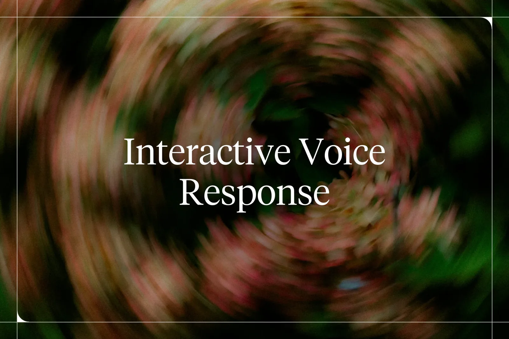
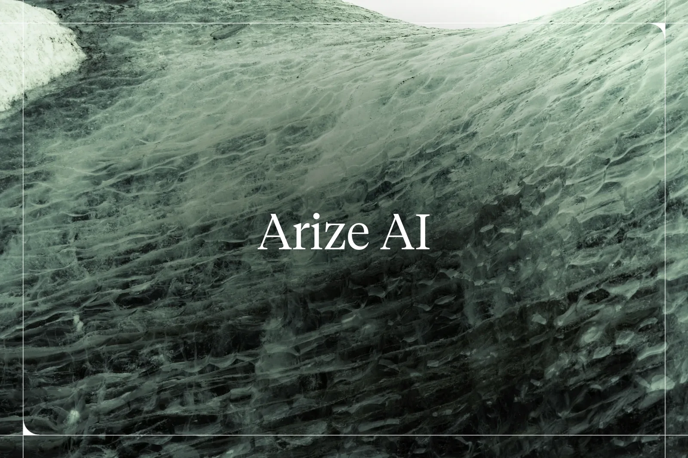
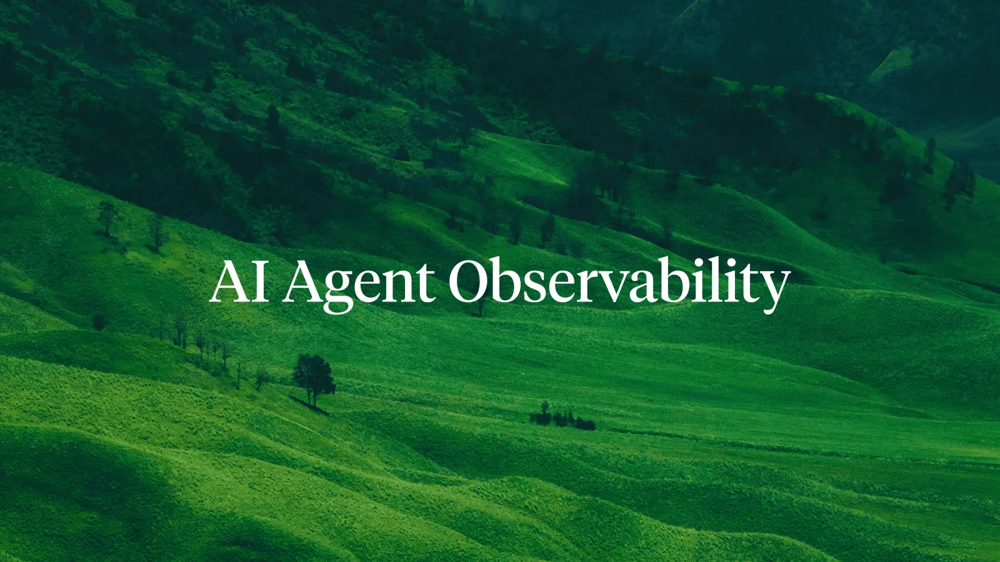
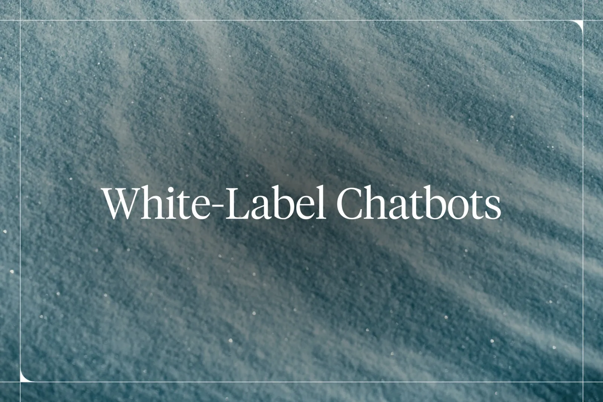
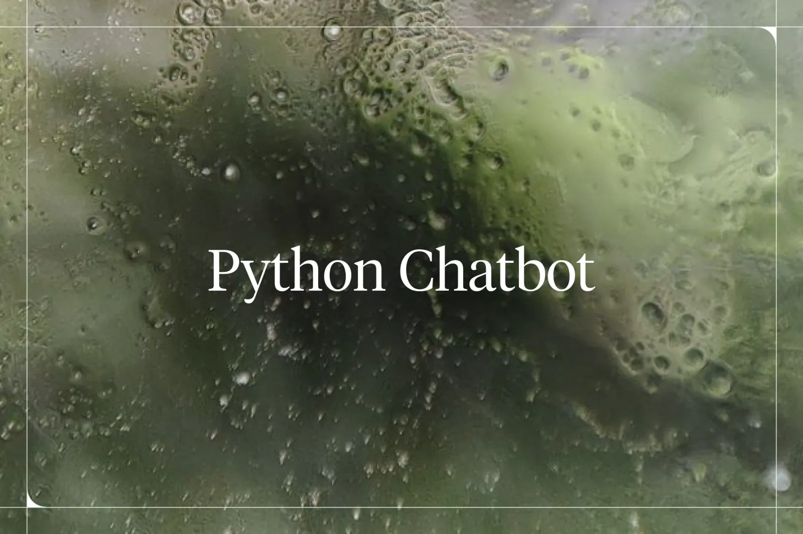
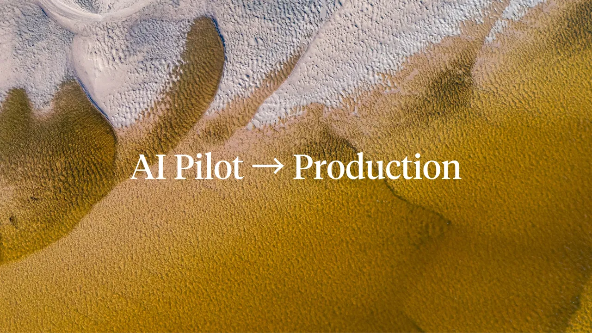
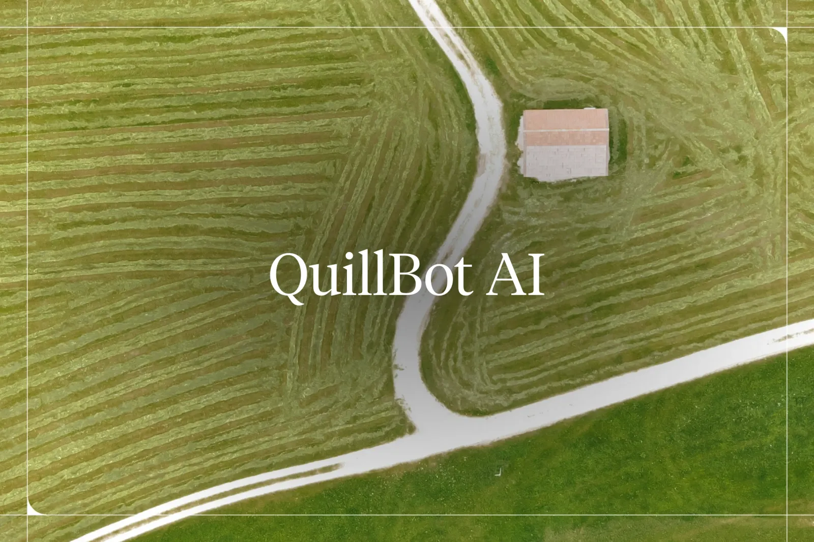
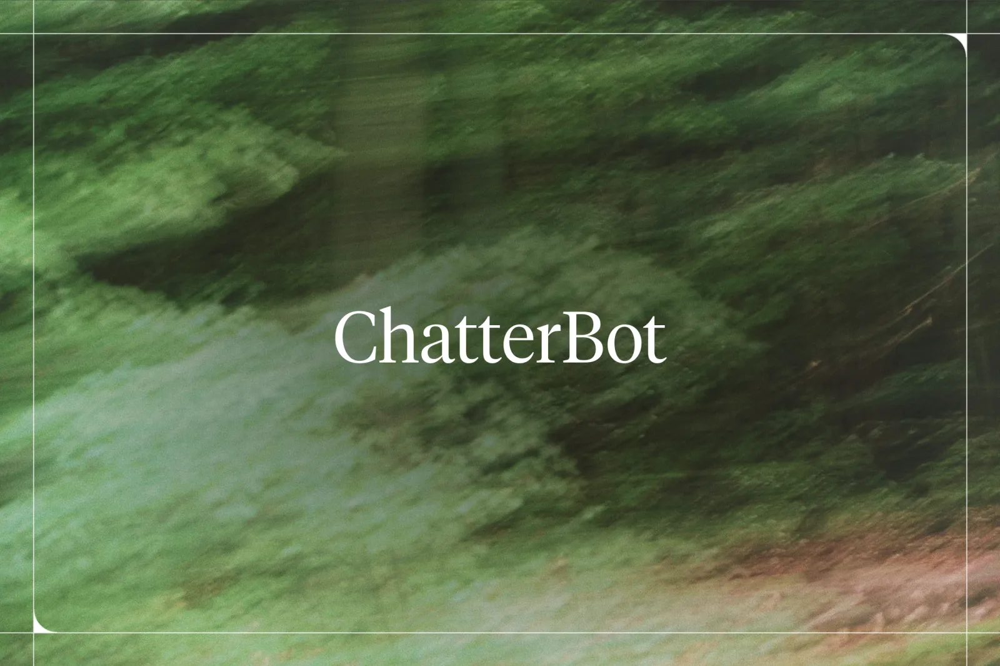
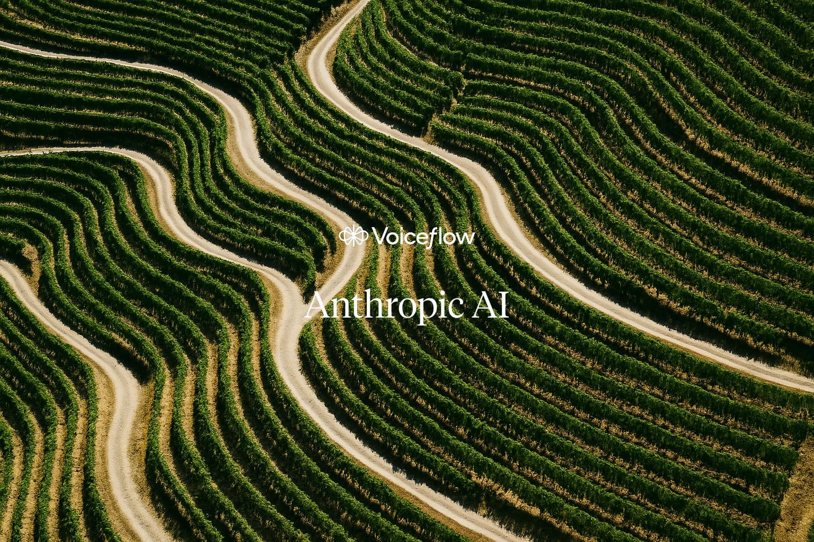
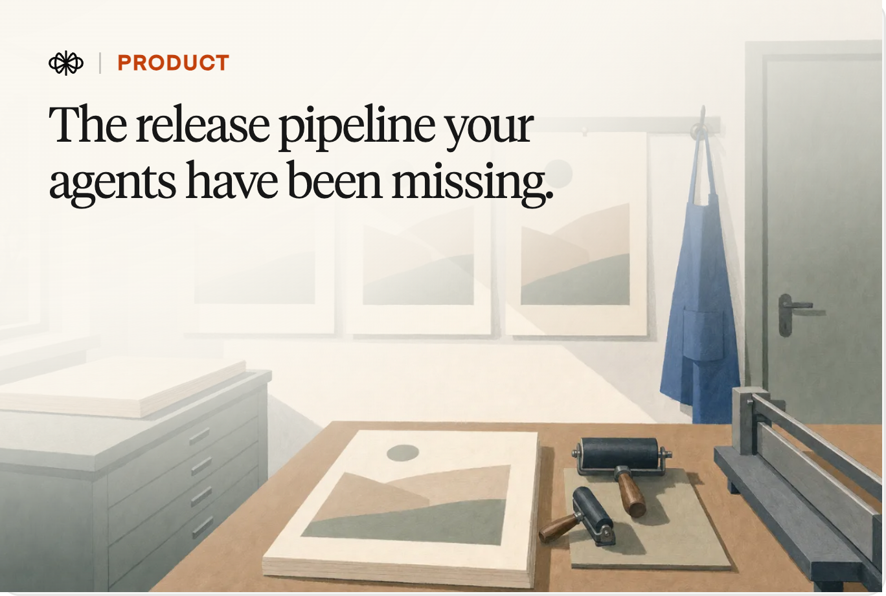
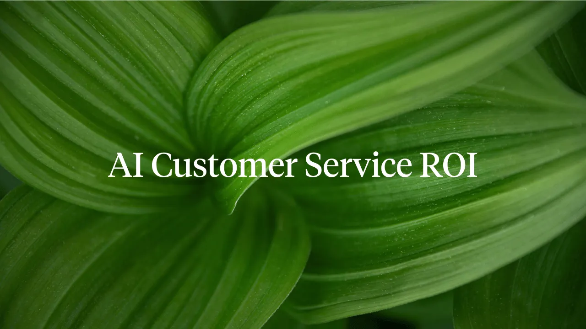


![5 Zendesk Alternatives To Consider In 2026 [Review]](images/6a43d0f5b77e4a53313a1a7c_6a43d0f5f65fc4471929ba3f_zendesk-alternative-hero.webp)


![Conversational AI: What It Is and How To Use It [2026]](images/6995bfb8e3e1359ecf9c4e4f_665f53a2308329922e7e9b23_AI-20Basics.webp)

![Customer Service Automation: Tools, Use Cases & ROI [2026]](images/6a43cb461e6159bc6c9c6e62_6a43cb45e88050d92d8fb838_customer-service-automation-hero.webp)


![How To Implement AI for Enterprise Successfully [Example]](images/67cef0f86e70e49277755ee7_667f4bc014f147af5056772b_Business-20Operations.webp)
![LivePerson Alternatives, Pricing & Review [2026]](images/6a43ce1c1f1917d9cd5fe705_6a43ce1b5445be6f668e6a13_liveperson-hero.webp)

![Agentic AI and Use Cases Explained [2026]](images/6a43d068db034c2207e31ea7_6a43d067db034c2207e31dbf_agentic-ai-hero.webp)
![Google Vertex AI Tutorial: How To Build AI Agents [2026]](images/6a43cd5b84b9f5c287fa23a8_6a43cd5a350a472535476866_vertex-ai-hero.webp)


![How To Build a Lead Generation Chatbot [Step by Step]](images/6a43d0fd3b6056d41aec5f0d_6a43d0fcb77e4a53313a1dde_lead-generation-chatbot-hero.webp)


![Complete Guide To Hiring An IT Solutions Company [2026]](images/6995bfb8e3e1359ecf9c4ede_667f4bc014f147af5056772b_Business-20Operations.avif)
![Build an AI Sales Agent Without Code [2026]](images/6a43d057033e2637748a394e_6a43d0563b6056d41aec0abf_ai-sales-agent-hero.webp)

![How to Create a Shopify Chatbot for E-commerce [2026]](images/6a43d0625445be6f66903857_6a43d062c2dfb6ce851519b2_shopify-chatbot-automation-hero.webp)


![How to Build an AI Chatbot for Subscription Box Services [2026]](images/6a43d0522814b0f024bca132_6a43d0525445be6f66902cf1_subscription-box-chatbot-hero.webp)
![3 Best AI Scheduling Assistants In 2025 [Tried & Tested]](images/6a43d03a1e6159bc6c9fb4b8_6a43d03984b9f5c287fc57af_ai-scheduling-assistant-hero.webp)
![Best Way to Use Conversational AI for E-Commerce [2026]](images/6a43d0355445be6f669015f8_6a43d0341e6159bc6c9fb0ec_conversational-ai-for-e-commerce-hero.webp)


![How to Build SMS Chatbot Twilio Integration Guide [2026]](images/6a43d06c1e6159bc6c9fd351_6a43d06bb03b7b65470e4ea1_sms-chatbot-twilio-hero.webp)


![How To Create a Customer Support Chatbot [Free Template]](images/6995bfb8e3e1359ecf9c4f24_66e383eac2581283245581b6_Marketplace.avif)

![10 Best Real-Life Chatbot Examples [2026 Ranking]](images/6995bfb8e3e1359ecf9c4e53_665f773cc809d49634d8743d_Chatbot-20Basics.webp)
![Best Enterprise AI Chatbots in 2026 [Reviewed & Compared]](images/6a43cb30167b766ca403949f_6a43cb30ec630f9c5b7064e8_enterprise-chatbot-hero.webp)
![How To Create a Conversational Voice Chatbot [No Code]](images/6a43cb3379d96938386b1a00_6a43cb336f82bf70d1a8a5e1_voice-chatbot-hero.webp)


![Conversational AI Design: A Practitioner's Guide [2026]](images/6a43cb4ab77e4a533135f4aa_6a43cb4a2814b0f024bb1fdf_conversation-design-hero.webp)


![Botpress Chatbot: Is It Right For You? [2026 Review]](images/6a43cb5df29a3e90682f523c_6a43cb5d95e3964dc488e8c5_botpress-hero.webp)
![Ultimate AI: What It Is and Best Alternatives [2026]](images/6a43cb5f79d96938386b24bd_6a43cb5f32e03c12e1227433_ultimate-ai-hero.webp)


![Decagon AI: How It Works & Best Alternative [2026]](images/6a43cb78ec1c45d50c840f1d_6a43cb78ec1c45d50c840ef7_decagon-ai-hero.webp)
![AgentGPT: What It Is and Best Alternative [2026 Review]](images/6a43cdf884b9f5c287faa30c_6a43cdf75445be6f668e4ab6_agentgpt-hero.webp)
![How to Build an AI Customer Service Chatbot in 2026 [4 Steps]](images/6a43ce001e6159bc6c9e7517_6a43cdff6f82bf70d1a9b668_customer-service-chatbot-hero.webp)
![Is Kore.ai Right For Your Business? [Review 2026]](images/6a43ce04580d30da59b91e20_6a43ce030f00d417ee5e5a2b_kore-ai-hero.webp)
![Cognigy AI: What It Is and Best Alternative [2026]](images/6a43ce14580d30da59b92017_6a43ce130f00d417ee5e65f6_cognigy-hero.webp)
![Sierra AI: What It Is and Best Alternative [2026]](images/6a43ce19937cea820f021f5d_6a43ce19b03b7b65470d4d22_sierra-ai-hero.webp)
![What’s Tidio, How It Works, and Alternatives [2026]](images/6a43ce2978259d20dadb6f22_6a43ce28350a47253547ddf7_tidio-hero.webp)
![How to Build an AI Call Agent for Restaurants [2026]](images/6a43d0371e6159bc6c9fb2d9_6a43d036033e2637748a2403_ai-call-agent-for-restaurants-hero.webp)

![DeepAI: What It Is and Best Alternative [2026]](images/6a43cb684e73d099c99c703a_6a43cb67b77e4a5331360492_deepai-hero.webp)
![Landbot Pricing 2026: Is It Worth It? [Review + Cost Breakdown]](images/6a43cb71167b766ca403aff0_6a43cb7084b9f5c287f8d7dc_landbot-hero.webp)
![Build an AI Chatbot for Your Cleaning Service [Easy Guide]](images/6a43d04084b9f5c287fc5d9c_6a43d0406f82bf70d1aad7c6_cleaning-service-chatbot-hero.webp)


![The No.1 AI Business Idea for Entrepreneurs [No Code]](images/6a43d0ee3bea8db8e70bd24c_6a43d0ec78259d20daddde1c_ai-business-ideas-hero.webp)
![How To Prototype with AI? [Step-by-Step Guide]](images/6a43d0d1a1d68a8e1ac90fc2_6a43d0d0b77e4a533139f557_ai-prototype-hero.webp)


![What Is Digital Customer Service [Strategy and Software]](images/6a43d10cc2dfb6ce851540a9_6a43d10b580d30da59ba1f84_digital-customer-service-hero.webp)


![Hugging Face Tutorial for Beginners [Quick Start]](images/6a43d10a6f82bf70d1ab6311_6a43d109f9d2710373ff6990_hugging-face-tutorial-hero.webp)

![A Guide To LangChain Prompt Template [Quick Start]](images/6a43d0e24e73d099c99e9bbb_6a43d0e2f9d2710373ff46e9_langchain-prompt-template-hero.webp)

![What’s NotebookLM + How To Get Started [Tutorial]](images/6a43d0ffb017177280343a8b_6a43d0ffb77e4a53313a1f8b_notebooklm-hero.webp)

![What’s Prompt Tuning? [Benefits and Challenges]](images/6a43d0ce32e03c12e125cfab_6a43d0ce6357cc112ddda7ed_prompt-tuning-hero.webp)
![Replicant: What It Is and Best Alternative [2026]](images/6a43d0bd6f82bf70d1ab2b43_6a43d0bcb77e4a533139e615_replicant-hero.webp)


![How To Add an AI Chatbot to Your Wix Website? [Tutorial]](images/6a43d1010f00d417ee60d3b4_6a43d10084b9f5c287fcd5b8_wix-chat-hero.webp)
![What’s Zapier Central and How Does It Work? [Review]](images/6a43d0ea4e73d099c99ea06f_6a43d0eadb034c2207e38412_zapier-central-hero.webp)

![What Is N8N? Pros & Cons and Best Alternative [2026]](images/6a43d05c0f00d417ee605205_6a43d05b033e2637748a3d1e_n8n-alternative-hero.webp)

![What’s Chatfuel and How Does It Work? [Tutorial]](images/6a43ce56350a47253548002d_6a43ce56f9d2710373fd510d_chatfuel-hero.webp)


![Intercom Pricing: The Ultimate Guide [2026]](images/6a43cb65033e263774864025_6a43cb656357cc112ddb17ec_intercom-pricing-hero.webp)


![Stack AI: What It Is and Best Alternatives [2026]](images/6a43cb76f29a3e90682f600d_6a43cb750f00d417ee5c7d0b_stack-ai-hero.webp)


![ChatOn: What It Is and Best Alternative [2026]](images/6a43d0c8f9d2710373ff33f9_6a43d0c7350a47253548fd46_chaton-hero.webp)
![Don’t Hire an E-Commerce Agency, Here’s Why [2026]](images/6a43d0f8580d30da59ba0b13_6a43d0f71e6159bc6ca03ef7_ecommerce-agency-hero.webp)
![Is Shopify Good for eCommerce? How Does It Work? [2026]](images/6a43d0f2f9d2710373ff5577_6a43d0f095e3964dc48baa7b_how-does-shopify-work-hero.webp)

![How to Set Up a Plumbing Answering Service Using AI [2026]](images/6a43d0471eb2cfe4bfce08e7_6a43d0465445be6f669023bf_plumbing-answering-service-hero.webp)
![Where & How To Find the Best Shopify Agency [2026]](images/6a43d0fadb034c2207e39068_6a43d0f932e03c12e125f09e_shopify-agency-hero.webp)
![TalkAI: What It Is and Best Alternative [2026]](images/6a43d0dae88050d92d925598_6a43d0d9580d30da59b9f0e5_talkai-hero.webp)
![Zoho CRM: Pricing, API, Pros and Cons [2026]](images/6a43d1076f82bf70d1ab60fe_6a43d107e34b392cf429f5fe_zoho-crm-hero.webp)
![Customer Effort Score: How to Measure & Improve It [2026]](images/6a43ce2b3b6056d41aeb4ed3_6a43ce2b0f00d417ee5e7ce3_customer-effort-score-hero.webp)
![How to Build an AI Dungeon Master Bot [Fast & Easy]](images/6a43d042a1d68a8e1ac8e42d_6a43d042b03b7b65470e43cc_ai-dungeon-master-hero.webp)
![How To Build An AI Bookkeeping Chatbot [2026]](images/6a43d0655445be6f669039c9_6a43d0659009306aab2bd698_bookkeeping-chatbot-hero.webp)
![How To Create an AI Contractor Answering Service [2026]](images/6a43ce33e34b392cf428c170_6a43ce326f82bf70d1a9beb9_contractor-answering-service-hero.webp)
![Build an AI Chatbot for Wedding Planners [Tutorial]](images/6a43d06079bce301551bc9c1_6a43d05f5445be6f6690360e_event-planning-chatbot-hero.webp)
![Build an AI Onboarding Bot for Your SaaS App [2026]](images/6a43d03d9009306aab2bc69d_6a43d03c6357cc112ddd7b68_saas-onboarding-chatbot-hero.webp)


![What Is Vibe Coding and How To Get Started Easily [2026]](images/6a43d05a5445be6f6690319a_6a43d059033e2637748a3ab7_vibe-coding-hero.webp)
![DeepSeek’s R1, AI Agent, and Everything Else [2025]](images/6a43d04ca1d68a8e1ac8e4d7_6a43d04bf29a3e90683195d8_what-is-deepseek-hero.webp)
![How to Build an AI Chatbot for Tattoo Studios [Easy Guide]](images/6a43d0455445be6f6690222c_6a43d044937cea820f03b34e_tattoo-studio-chatbot-hero.webp)
![Why Blackbox AI Matters to Businesses Today [2025]](images/6a43d0555445be6f66902fb2_6a43d0544e73d099c99e5474_blackbox-ai-hero.webp)